![]()
![BHAK Wappen]()
![]()
Du arbeitest im Arbeitsblatt – dort stehen alle Aufgaben, die Versuche und zu jeder Aufgabe eine Theorie-Karte. Diese Seite brauchst du, wenn du mehr wissen willst, und vor dem Test.
So arbeitest du
Diese Seite ist dein Nachschlagewerk
So gehst du vor
Dein Fahrplan
4 Stunden · Welche Stunde heute dran ist, sagt dir Prof. HOLZER.
Heute ist Stunde:
Diese Stunde: Stunde 1 DEMO
1DEMO Stimmgabel · Druckwelle · Theorie-Karten 1 und 2 · Buch S. 61
2Im Arbeitsblatt: Aufgabe 1–3
3Abgabe: keine
Diese Stunde: Stunde 2 VERSUCH
1DEMO Lineal und Tongenerator · Dezibel-Leiter · VERSUCH Schallpegel messen · Buch S. 63–64
2Im Arbeitsblatt: Aufgabe 4, 5
3Abgabe: Messwerte deiner Gruppe eintragen
Diese Stunde: Stunde 3 SELBSTSTUDIUM
1Aufbau des Ohrs, Hörvorgang · Mini-Versuch am eigenen Kopf · Gehörschutz · Buch S. 109–110
2Im Arbeitsblatt: Aufgabe 6–8
3Abgabe: keine
Diese Stunde: Stunde 4 DEMO
1DEMOS Richtungshören und Wasserglas · Lage- und Drehsinn · Partnercheck · Buch S. 110–112
2Im Arbeitsblatt: Aufgabe 9
3Abgabe: Arbeitsblatt-PDF in LMS
Alle Stunden (4)
- Stunde 1 · DEMO – DEMO Stimmgabel · Druckwelle · Theorie-Karten 1 und 2 · Buch S. 61
- Stunde 2 · VERSUCH – DEMO Lineal und Tongenerator · Dezibel-Leiter · VERSUCH Schallpegel messen · Buch S. 63–64
- Stunde 3 · SELBSTSTUDIUM – Aufbau des Ohrs, Hörvorgang · Mini-Versuch am eigenen Kopf · Gehörschutz · Buch S. 109–110
- Stunde 4 · DEMO – DEMOS Richtungshören und Wasserglas · Lage- und Drehsinn · Partnercheck · Buch S. 110–112
Für Schnelle: Echolot und Fledermaus, KI-Fehlerjagd, Gehörschutz-Briefing (Podcast oder Plakat) · Aufgaben Zusatz 10–12
So läuft die ganze Einheit
Vier Stunden, ein Weg: vom Knall zum Kopf. Stunde 1 Schall und Tempo, Stunde 2 messen in Dezibel, Stunde 3 das Ohr und sein Schutz, Stunde 4 Richtung und Gleichgewicht. Alles steht in EINEM Arbeitsblatt, du gibst EIN PDF ab. Keine Hausübung. Welche Stunde heute dran ist, sagt dir Prof. HOLZER.
Zum Start
Einstieg
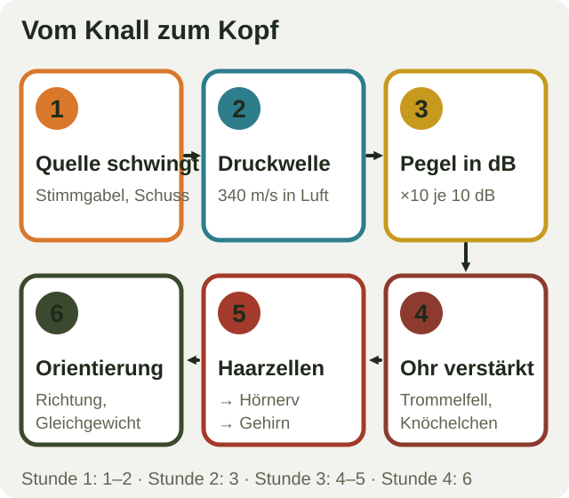
Bild antippen – dann wird es groß.
- Das Wichtigste vorab: Schall ist eine Druckwelle. Dein Ohr macht daraus elektrische Signale – und dasselbe Innenohr sagt dir, wo oben ist.
- Wozu? Beim Schießen, auf der Baustelle, im Konzert und mit Kopfhörern entscheidest du selbst, ob dein Gehör in 30 Jahren noch funktioniert. Im Gelände hilft dir das Richtungshören, beim Sport und Fliegen der Gleichgewichtssinn – bis er dich täuscht.
- Das kannst du nachher: Entfernungen aus Schallzeiten berechnen, Dezibel richtig lesen, den Weg vom Trommelfell zur Haarzelle erklären und sagen, was dein Gehör wirklich schützt.
Jede Stunde ist ein Abschnitt dieses Weges. Du arbeitest im Arbeitsblatt – diese Seite ist zum Nachschlagen.
Im Film
In vielen Weltraumfilmen – etwa in der Star-Wars-Reihe – donnern Explosionen und heulen Triebwerke durch das All.
In Wirklichkeit
Im fast leeren Weltraum gibt es keine Teilchen, die Schall weitergeben. Eine Explosion wäre lautlos – nur Funk oder Trümmer, die das eigene Schiff treffen, würden etwas hörbar machen.
- Offene Frage der Forschung: Vögel und Fische können zerstörte Haarzellen nachbilden, Menschen nicht. Forschungsgruppen weltweit suchen nach Wegen, diese Fähigkeit auch beim Menschen anzuschalten – heilen kann man Lärmschwerhörigkeit bis heute nicht.
Filme hier nur in Worten – keine Filmbilder auf dieser Seite (Urheberrecht).
- Schall als Druckwelle erklären und die Größen Frequenz, Amplitude, Wellenlänge, Schallgeschwindigkeit und Schalldruckpegel richtig zuordnen
- mit s = v · t und v = λ · f Entfernungen, Echos und Laufzeiten berechnen
- einen Schallpegel vergleichend messen und Dezibel-Werte richtig deuten – auch für Gehörschutz beim Schießen, im Konzert und mit Kopfhörern
- erklären, wie das Ohr aus Druckschwankungen Nervensignale macht und wie Richtungshören und Gleichgewichtssinn funktionieren
Teil 1 · Buch S. 61 · Stunde 1
Schall ist eine Druckwelle
Buch
Lies im Buch S. 61 die Abschnitte »Schall« und »Schallfeld und Schallausbreitung« (3 min). Markiere, was Schall braucht, um sich auszubreiten.
Theorie-KarteSchall ist eine DruckwelleBuch S. 61
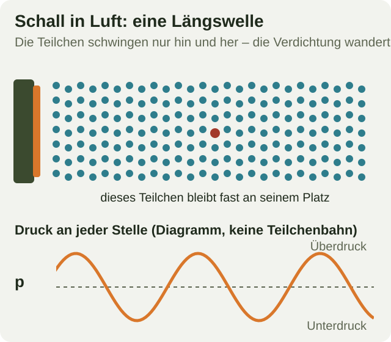
Bild antippen – dann wird es groß.
Eine Schallquelle schwingt und stößt die Luftteilchen an. Die Teilchen schwingen nur hin und her – weiter wandern Verdichtung und Verdünnung (Längswelle).
Ohne Teilchen kein Schall: Im Vakuum breitet sich Schall nicht aus.
Die Wellenlinie in Zeichnungen zeigt den Luftdruck an einer Stelle – keine Auf-und-ab-Bewegung.
| p | Schalldruck: Abweichung vom normalen Luftdruck | Pa |
| f | Frequenz: Schwingungen pro Sekunde | Hz |
| A | Amplitude: größte Druckschwankung | Pa |
AusprobierenDruckwelle selbst einstellen
Schau auf das rote Teilchen: Es bleibt fast an seinem Platz. Die orange Kurve zeigt den Druck – oben dichte, unten dünne Luft.
- Eine Schallquelle – Stimmband, Lautsprechermembran, Stimmgabel – schwingt. Bei jedem Schwung nach vorne drückt sie die Luft davor zusammen (Verdichtung), beim Zurückschwingen entsteht eine Verdünnung.
- Die Luftteilchen geben den Stoß an ihre Nachbarn weiter. Jedes Teilchen bewegt sich dabei nur Bruchteile eines Millimeters längs der Ausbreitungsrichtung hin und her. Das ist eine Längswelle (Longitudinalwelle).
- Der Schalldruck ist die kleine Abweichung vom normalen Luftdruck. Selbst ein lautes Gespräch ändert den Luftdruck um weniger als ein Zehntausendstel Prozent.
- Schall braucht einen Träger: Gas, Flüssigkeit oder festen Stoff. Im Vakuum gibt es keinen Schall – das zeigt der Wecker unter der leergepumpten Glocke (Buch S. 61).
DEMO K2.4-D1Stunde 1
Stimmgabel: sehen, hören, spüren
Prof. HOLZER schlägt die Stimmgabel an. Erst vermuten: Was passiert, wenn sie ins Wasser taucht? Wenn ihr Stiel auf den Tisch drückt? Danach dürft ihr den Stiel am Tisch selbst spüren. Der Tisch schwingt mit und wirkt als Resonanzkörper – darum wird es lauter (Brücke zur Resonanz aus der Wellenlehre).
Wandert die Luft vom Lautsprecher zu dir?
Erst überlegen – dann Lösung anzeigen
Nein. Die Teilchen schwingen nur um ihren Platz; die Verdichtung wandert weiter.
Was zeigt die Wellenlinie in einer Schallzeichnung?
Erst überlegen – dann Lösung anzeigen
Den Luftdruck an einer Stelle: oben Überdruck, unten Unterdruck.
Teil 2 · Buch S. 61, 67 · Stunde 1
Wie schnell ist Schall?
Buch
Lies im Buch S. 61 den letzten Absatz zur Schallgeschwindigkeit mit der Gewitterregel.
Theorie-KarteWie schnell ist Schall?Buch S. 61, 67
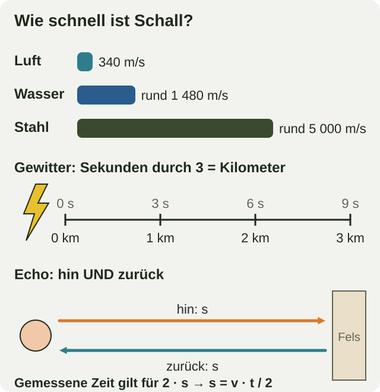
Bild antippen – dann wird es groß.
In Luft legt Schall rund 340 m pro Sekunde zurück (bei 15 °C; bei 20 °C 343 m/s) – in Wasser etwa 1480 m/s, in Stahl rund 5000 m/s.
s = v · t. Beim Echo läuft der Schall hin und zurück: Die Wand ist nur halb so weit weg.
Aus der Wellenlehre kennst du v = λ · f – daraus folgt λ = v / f.
| s | Weg | m |
| v | Schallgeschwindigkeit | m/s |
| t | Zeit | s |
| λ | Wellenlänge | m |
| s = v · t | Echo: s = v · t / 2 | |
| λ = v / f | Faustregel Gewitter: Sekunden : 3 = km |
| Stoff | Schallgeschwindigkeit | für 1 km braucht Schall |
|---|---|---|
| Luft, 0 °C | 331 m/s | 3,0 s |
| Luft, 15 °C | 340 m/s | 2,9 s |
| Luft, 20 °C | 343 m/s | 2,9 s |
| Wasser | rund 1480 m/s | 0,7 s |
| Stahl | rund 5000 m/s | 0,2 s |
- Wärmer = schneller: In Luft steigt v um etwa 0,6 m/s pro Grad. Für Schätzungen ist das egal, für genaue Messungen nicht.
- Gewitter: Licht ist fast eine Million Mal schneller als Schall. Zähle die Sekunden zwischen Blitz und Donner und teile durch 3 – das ergibt ungefähr die Entfernung in Kilometern.
- Echo: Die gemessene Zeit gilt für Hin- und Rückweg. Darum: s = v · t / 2. Genau so messen Echolot und Fledermaus Entfernungen.
- Wellenlänge: Mit λ = v / f hat der Kammerton a' (440 Hz) in Luft eine Wellenlänge von rund 0,77 m – tiefe Töne haben Meter, Ultraschall nur Millimeter.
s = v · t. Beim Echo durch 2 teilen. In Luft rechnen wir mit v = 340 m/s.
Donner 9 s nach dem Blitz – wie weit ungefähr?
Erst überlegen – dann Lösung anzeigen
9 : 3 = 3 km (genauer 340 m/s · 9 s = 3060 m).
Echo nach 0,5 s – wie weit ist die Wand?
Erst überlegen – dann Lösung anzeigen
340 m/s · 0,5 s = 170 m hin und zurück, also 85 m.
Teil 3 · Buch S. 63–64, 66 · Stunde 2
Tonhöhe, Lautstärke, Hörbereich
Buch
Lies im Buch S. 63 den Abschnitt »Tonhöhe« bis zur schwingenden Saite. Die Formel für die Eigenfrequenzen brauchst du nicht.
Theorie-KarteTonhöhe und LautstärkeBuch S. 63–64
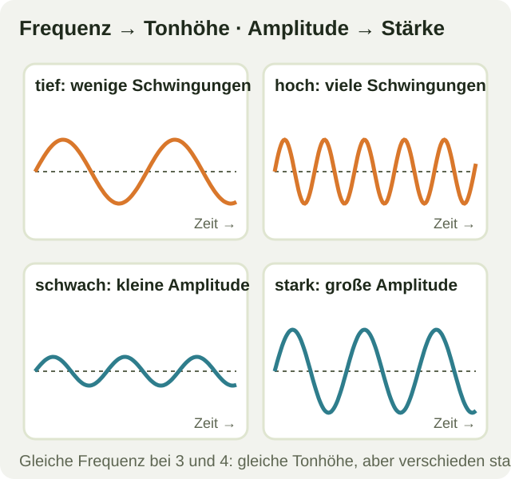
Bild antippen – dann wird es groß.
Die Frequenz f bestimmt die Tonhöhe: mehr Schwingungen pro Sekunde, höherer Ton. Eine kürzere Linealzunge oder Saite schwingt schneller.
Die Amplitude bestimmt die Stärke: größere Druckschwankung, lauterer Schall.
Junge Menschen hören etwa 20 Hz bis 20 000 Hz. Darunter liegt Infraschall, darüber Ultraschall.
| f | Frequenz | Hz |
| 1 kHz | = 1000 Hz | |
| Kammerton a' | 440 Hz |
DEMO K2.4-D2Stunde 2
Lineal an der Tischkante und Tongenerator
Ein Lineal an der Tischkante: Je kürzer das schwingende Stück, desto höher der Ton – es schwingt öfter pro Sekunde. Schlägst du stärker an, wird der Ton lauter, aber nicht höher. Danach spielt Prof. HOLZER Töne mit dem Tongenerator am Beamer – leise, ohne Kopfhörer.
- Bei einer Gitarre gilt dasselbe: Greifst du die Saite ab, wird das schwingende Stück kürzer und der Ton höher. Stärker gespannte Saiten klingen ebenfalls höher.
- Ton, Klang, Geräusch: Ein reiner Ton ist eine einzige Sinusschwingung. Ein Instrument erzeugt einen Klang aus Grundton und Obertönen – darum klingen Gitarre und Trompete verschieden. Ein Geräusch hat kein regelmäßiges Muster.
- Infraschall (unter 20 Hz): Elefanten verständigen sich damit über Kilometer, auch Erdbeben und Windräder erzeugen ihn. Er ist nicht grundsätzlich gefährlich – entscheidend ist, wie stark er ist.
- Ultraschall (über 20 000 Hz): Fledermäuse und Delfine orten damit. In der Medizin macht er Bilder vom Herz oder vom Baby im Bauch, in der Technik prüft er Werkstücke auf Risse und reinigt Brillen.
- Mit dem Alter sinkt die obere Hörgrenze – vor allem, weil Haarzellen am Anfang der Schnecke (zuständig für hohe Töne) verloren gehen.
Achtung beim Buch S. 63: Dort steht, dass im Alter das Trommelfell seine Elastizität verliert. Die Hauptursache der Altersschwerhörigkeit sind aber verlorene Haarzellen im Innenohr.
Ein Lineal schwingt kürzer über die Tischkante. Was passiert mit dem Ton?
Erst überlegen – dann Lösung anzeigen
Er wird höher – die kürzere Zunge schwingt öfter pro Sekunde.
Was ist Ultraschall?
Erst überlegen – dann Lösung anzeigen
Schall über 20 000 Hz – für Menschen nicht hörbar.
Teil 4 · Buch S. 64, 110 · Stunde 2
Dezibel: die Leiter in Zehnerschritten
Buch
Lies im Buch S. 64 den Abschnitt »Lautstärke (Schalldruckpegel)« und sieh dir auf S. 110 die Tabelle der Alltagsgeräusche an.
Theorie-KarteDezibel: die Leiter in ZehnerschrittenBuch S. 64, 110
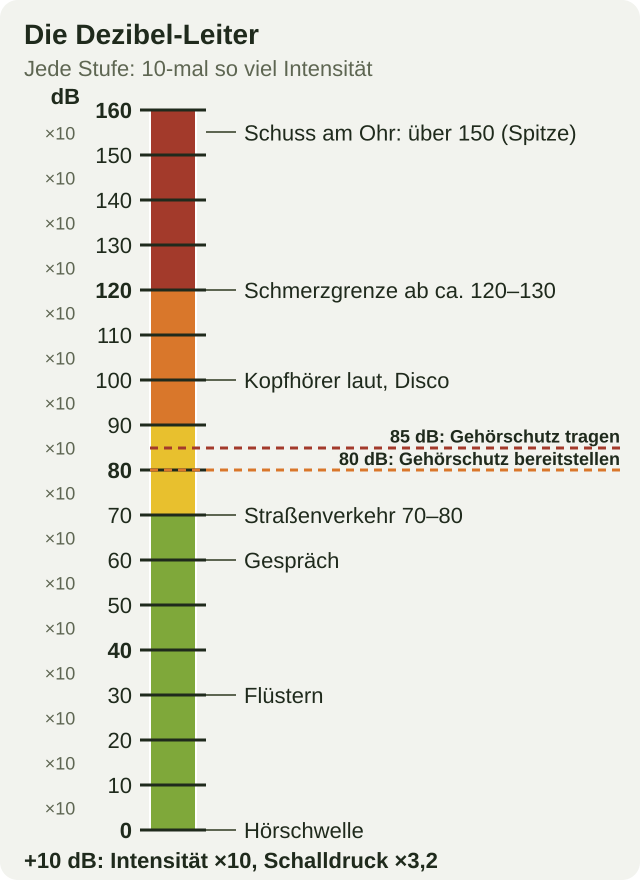
Bild antippen – dann wird es groß.
Der Schalldruckpegel wird in Dezibel (dB) angegeben. 0 dB ist ungefähr die Hörschwelle.
+10 dB = zehnfache Intensität, aber nur etwa 3,2-facher Schalldruck. +20 dB = hundertfache Intensität, zehnfacher Schalldruck.
Die Lautstärke ist unsere Empfindung und hängt auch von der Frequenz ab. Grob: +10 dB klingen etwa doppelt so laut.
| L | Schalldruckpegel | dB |
| I | Schallintensität (Energie pro Fläche und Zeit) | W/m² |
| +10 dB | Intensität × 10, Schalldruck × 3,2 | |
| +3 dB | doppelte Intensität (zwei gleiche Quellen) |
- Unser Ohr verarbeitet Schalldrücke von 0,00002 Pa (Hörschwelle) bis etwa 20 Pa an der Schmerzgrenze – das ist das Millionenfache. Damit diese riesige Spanne handlich wird, zählt man in Zehnerstufen: Jede Stufe von 10 dB ist zehnmal so viel Intensität.
- Drei Größen, nicht verwechseln: Die Schallintensität ist Energie pro Fläche und Zeit (W/m²). Der Schalldruckpegel ist das Messergebnis in dB. Die Lautstärke ist, wie laut wir es empfinden – sie hängt zusätzlich von der Frequenz ab (am empfindlichsten sind wir zwischen etwa 500 und 5000 Hz).
- Dezibel addiert man nicht. Zwei gleich laute Quellen liefern doppelte Intensität: Das sind nur etwa +3 dB. Zwei Rasenmäher mit je 90 dB ergeben rund 93 dB – nicht 180 dB.
- Das Buch gibt Lautstärken in phon an. phon und dB stimmen nur bei 1000 Hz überein – im Alltag nennen Messgeräte und Gesetze dB.
| Beispiel | ungefähr | Was heißt das? |
|---|---|---|
| Hörschwelle | 0 dB | gerade noch hörbar |
| Flüstern | 30 dB | |
| Gespräch | 60 dB | |
| Straßenverkehr | 70–80 dB | ab 80 dB: Arbeitgeber muss Gehörschutz bereitstellen |
| Rasenmäher, Werkstatt | 85–95 dB | ab 85 dB: Gehörschutz tragen |
| Kopfhörer voll aufgedreht, Disco, Konzert | 100–110 dB | schon nach Minuten gefährlich |
| Schmerzgrenze | um 120–130 dB | |
| Schuss am Ohr des Schützen | über 150 dB (Spitze) | ein einziger Knall kann schädigen |
Werte sind Richtwerte, gerundet. Das Buch nennt für Diskotheken auf S. 64 110 phon und auf S. 110 100 dB – beides kommt vor, je nach Musik und Platz.
70 dB gegen 90 dB: Wievielmal Intensität?
Erst überlegen – dann Lösung anzeigen
100-mal (zwei Zehnerstufen).
Ist Lautstärke dasselbe wie Schalldruckpegel?
Erst überlegen – dann Lösung anzeigen
Nein. Der Pegel ist gemessen, die Lautstärke ist die Empfindung – sie hängt auch von der Frequenz ab.
Teil 5 · Buch S. 62–64 · Stunde 2
Versuch: Schallpegel im langen Saal
VERSUCH K2.4-V1KERN · Stunde 2
Schallpegel im langen Saal messen
Vorne spielt ein Lautsprecher einen gleichmäßigen Ton. Jede Gruppe misst mit einem Handy. 1 Pegelmesser im Arbeitsblatt starten. 2 Am Lehrertisch, 1 m vor dem Lautsprecher, auf »Referenz setzen« tippen – jetzt zeigt das Handy 0 dB. 3 Zurück an euren Platz (Abstand steht am Boden) und messen: Ton aus, Ton an. 4 Werte eintragen, an Prof. HOLZER melden.
Zum Versuch im Arbeitsblatt (Aufgabe 5)- Warum Referenz? Ein Handy ist kein geeichtes Messgerät, und jedes Handy misst ein bisschen anders. Setzen alle am selben Ort auf 0 dB, fällt dieser Unterschied heraus – wir vergleichen nur noch.
- Was zu erwarten ist: Im Freien sinkt der Pegel bei doppeltem Abstand um etwa 6 dB – die Energie verteilt sich auf eine viermal so große Fläche. Im Saal werfen Wände, Decke und Boden Schall zurück; der Abfall ist dann kleiner.
- Datenschutz: Der Pegelmesser wertet das Mikrofon nur im Handy aus. Es wird nichts aufgenommen, gespeichert oder verschickt.
Doppelter Abstand: im Freien etwa −6 dB. Abstand hilft – ersetzt aber nie den Gehörschutz.
Teil 6 · Buch S. 109–110 · Stunde 3
Der Weg ins Ohr
Buch
Lies im Buch S. 109 die Tabelle zu Außen-, Mittel- und Innenohr und auf S. 110 den Abschnitt »Hörvorgang« (4 min).
Theorie-KarteDer Weg ins OhrBuch S. 109–110
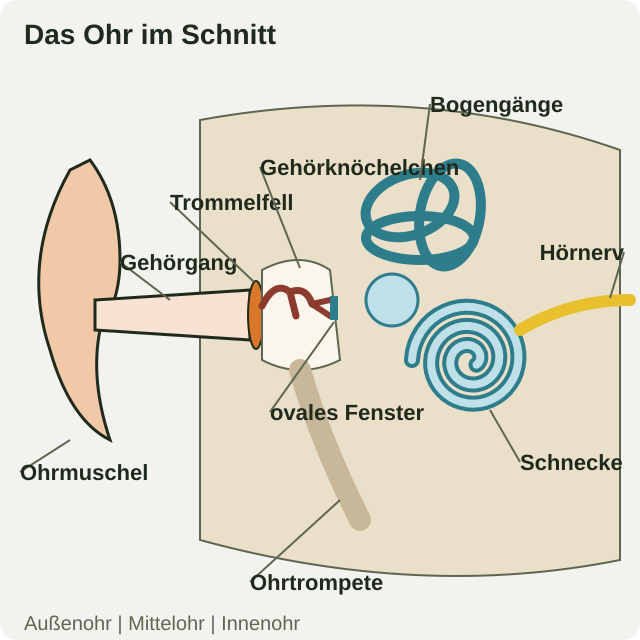
Bild antippen – dann wird es groß.
Außenohr: Ohrmuschel und Gehörgang leiten den Schall zum Trommelfell, das mitschwingt.
Mittelohr: Hammer, Amboss, Steigbügel übertragen die Schwingung auf das kleine ovale Fenster und verstärken den Druck etwa 22-fach – sonst käme sie kaum in die Flüssigkeit.
Innenohr: Die Druckwelle bewegt Lymphe und Grundmembran; die Haarzellen im Corti-Organ machen daraus elektrische Signale für den Hörnerv.
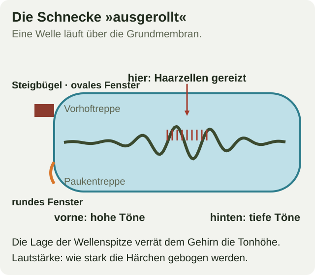
Bild antippen – dann wird es groß.
- Warum verstärken? Luft ist leicht beweglich, die Lymphe im Innenohr träge wie Wasser. Ohne Hilfe würde fast der ganze Schall an der Flüssigkeit zurückgeworfen. Das große Trommelfell drückt über die Gehörknöchelchen auf das etwa 17-mal kleinere ovale Fenster, die Hebel bringen noch etwas dazu: zusammen rund 22-facher Druck.
- Die Ohrtrompete verbindet Mittelohr und Rachen und gleicht den Luftdruck aus – darum hilft Schlucken beim Landeanflug.
- Haarzellen tragen feine Härchen, die in eine Deckmembran ragen. Werden sie abgebogen, öffnen sich Ionenkanäle: Aus der Bewegung wird ein elektrisches Signal, das über den Hörnerv zum Gehirn geht. Erst das Gehirn macht daraus »Hören«.
- Luft- und Knochenleitung: Schall kommt über Gehörgang und Mittelohr (Luftleitung) – oder über die Schädelknochen direkt zur Schnecke (Knochenleitung). Deine eigene Stimme hörst du über beide Wege; auf einer Aufnahme fehlt die Knochenleitung.
VERSUCH K3.2-V1KERN · Stunde 3
Luft- und Knochenleitung am eigenen Kopf
Summe leise, halte dir dann beide Ohren mit den Fingern zu und summe weiter: Was ändert sich? Denk danach an eine Sprachnachricht mit deiner Stimme.
Zum Versuch im Arbeitsblatt (Aufgabe 7)Was würde ohne Gehörknöchelchen passieren?
Erst überlegen – dann Lösung anzeigen
Fast der ganze Schall würde an der Flüssigkeit der Schnecke zurückgeworfen – wir hörten viel schlechter.
Wo wird aus Schwingung ein elektrisches Signal?
Erst überlegen – dann Lösung anzeigen
In den Haarzellen des Corti-Organs in der Schnecke.
Teil 7 · Buch S. 109–110 · Stunde 3
Hörschäden und Gehörschutz
Theorie-KarteHörschäden und GehörschutzBuch S. 109–110
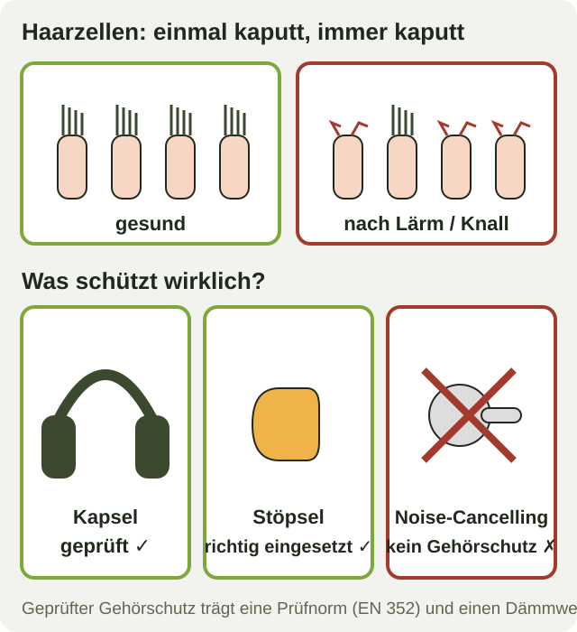
Bild antippen – dann wird es groß.
Zu viel Schall knickt und zerstört Haarzellen – beim Menschen wachsen sie nicht nach. Ein extrem lauter Knall kann ein Knalltrauma auslösen, oft mit Tinnitus.
Auch lange Belastung schadet: Am Arbeitsplatz muss ab 80 dB Gehörschutz bereitstehen, ab 85 dB muss er getragen werden.
Nur geprüfter Gehörschutz (Stöpsel, Kapsel, Otoplastik) schützt zuverlässig – Noise-Cancelling-Kopfhörer sind dafür nicht zugelassen.
| 80 dB | 40 Stunden pro Woche gelten als sichere Grenze (WHO) | |
| +3 dB | halbe sichere Hördauer |
- Lärmschwerhörigkeit entsteht schleichend: Jahre mit zu viel Lärm zerstören nach und nach Haarzellen, zuerst für hohe Töne. Man merkt es spät – Gespräche im Lärm werden mühsam.
- Knalltrauma: Ein Schuss, ein Böller oder eine Explosion direkt am Ohr. Spitzenpegel über 150 dB können Haarzellen sofort zerstören. In einer Studie mit über 220 000 finnischen Wehrpflichtigen hatten fast 9 von 10 Betroffenen beim Knall keinen Gehörschutz getragen – meist beim Schießen mit Platzpatronen.
- Tinnitus ist ein Ohrgeräusch ohne äußere Schallquelle – Pfeifen, Rauschen, Klingeln. Er kann nach einem Knall vorübergehen oder bleiben. Wer danach Pfeifen oder dumpfes Hören bemerkt: am selben Tag zum Truppenarzt bzw. HNO-Arzt.
- Kopfhörer: Laut einer großen Auswertung von 33 Studien (2022) hört jeder Vierte zwischen 12 und 34 Jahren über Kopfhörer zu laut. Die WHO rät: unter 60 % der Maximallautstärke bleiben und Pausen machen.
Schützt zuverlässig
Kapselgehörschutz, Schaumstoff-Stöpsel (richtig eingesetzt!), Otoplastik – geprüft nach EN 352 und mit Dämmwert angegeben.
Schützt NICHT zuverlässig
Noise-Cancelling-Kopfhörer: Sie erzeugen Gegenschall und wirken vor allem bei gleichmäßigen, tiefen Geräuschen (Flugzeug, Zug). Sie sind kein geprüfter Gehörschutz und in Lärmbereichen nicht zugelassen. Watte und Finger im Ohr reichen auch nicht.
Stöpsel richtig einsetzen: zwischen den Fingern dünn rollen, mit der anderen Hand das Ohr nach hinten oben ziehen, Stöpsel tief einsetzen und kurz halten, bis er sich ausdehnt.
Warum ist ein einzelner Schuss ohne Gehörschutz gefährlich?
Erst überlegen – dann Lösung anzeigen
Der Spitzenpegel liegt weit über 150 dB und kann Haarzellen sofort zerstören.
Schützt Noise-Cancelling beim Schießen?
Erst überlegen – dann Lösung anzeigen
Nein – nicht als Gehörschutz geprüft, wirkt vor allem gegen gleichmäßige tiefe Geräusche.
Teil 8 · Buch S. 110 · Stunde 4
Richtungshören
Buch
Lies im Buch S. 110 den Abschnitt »Richtungshören«. Achtung: Im Tipp beim Buchversuch steht »ca. 300 m/s« – rechne in dieser Einheit mit 340 m/s wie auf S. 61.
Theorie-KarteRichtungshörenBuch S. 110
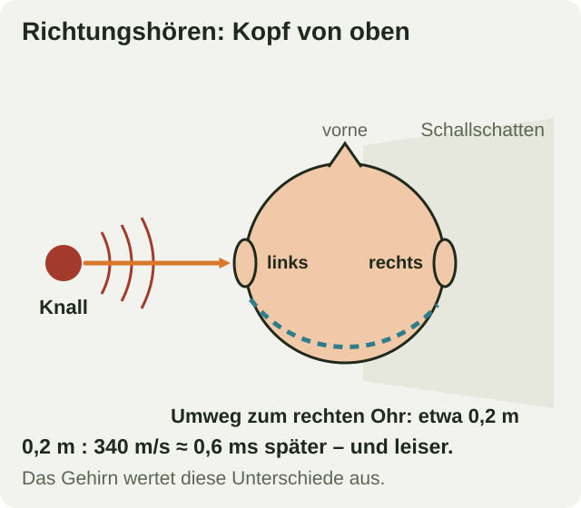
Bild antippen – dann wird es groß.
Kommt ein Geräusch von der Seite, erreicht es das abgewandte Ohr etwas später und leiser.
Bei rund 0,2 m Umweg sind das nur etwa 0,6 Millisekunden – das Gehirn wertet sogar Unterschiede von wenigen Hundertstel Millisekunden aus.
Von genau vorne oder hinten ist für beide Ohren alles gleich. Dann helfen die Form der Ohrmuschel und Kopfdrehen.
| Δt = Δs / v | Zeitunterschied zwischen den Ohren | s |
| 0,2 m : 340 m/s | ≈ 0,0006 s = 0,6 ms |
DEMO K3.2-D1Stunde 4
Woher kommt das Schnippen?
Ein Freiwilliger schließt die Augen. Andere schnippen leise an verschiedenen Stellen – links, rechts, vorne, hinten, oben. Er zeigt, woher es kommt. Danach dasselbe mit einem zugehaltenen Ohr. Vorher vermuten: Wo wird er sich am häufigsten irren?
- Bei tiefen Tönen wertet das Gehirn vor allem den Zeitunterschied aus, bei hohen Tönen den Pegelunterschied: Der Kopf wirft einen »Schallschatten« auf das abgewandte Ohr.
- Im Gelände, im Straßenverkehr und auf dem Schießplatz ist schnelles Orten lebenswichtig. Mit einem Ohr oder mit dichtem Gehörschutz ist es deutlich schwerer – darum gibt es Gehörschutz mit Durchhörfunktion, der Sprache durchlässt und Knalle begrenzt.
Welche zwei Unterschiede nutzt das Gehirn zum Orten?
Erst überlegen – dann Lösung anzeigen
Den Zeitunterschied und den Pegelunterschied zwischen den Ohren.
Wie groß ist der Zeitunterschied höchstens?
Erst überlegen – dann Lösung anzeigen
Etwa 0,6 Millisekunden.
Teil 9 · Buch S. 111–112 · Stunde 4
Gleichgewicht: Lage- und Drehsinn
Buch
Lies im Buch S. 112 die Abschnitte »Lagesinn« und »Drehsinn« (3 min).
Theorie-KarteGleichgewicht: Lage- und DrehsinnBuch S. 111–112
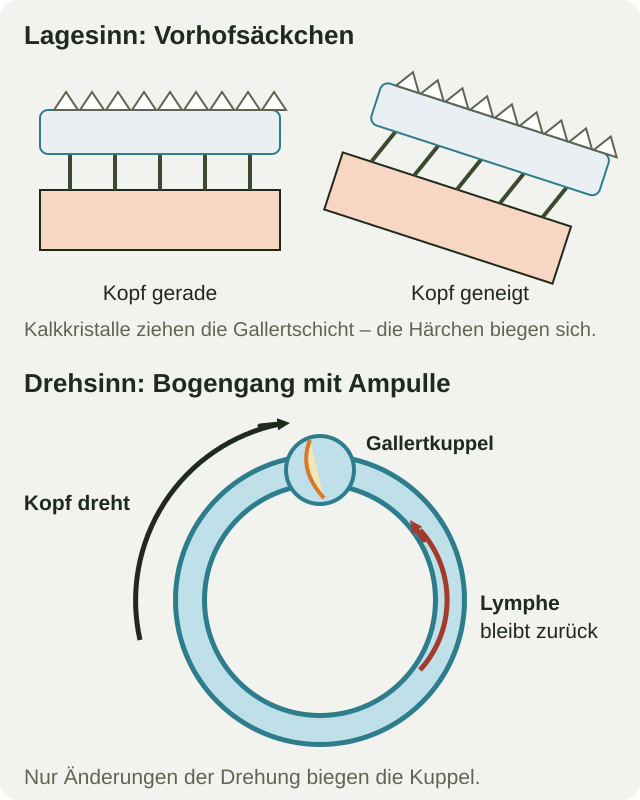
Bild antippen – dann wird es groß.
Vorhofsäckchen (Lagesinn): Kalkkristalle auf einer Gallertschicht werden von der Schwerkraft gezogen und biegen die Härchen der Sinneszellen – so merkst du Neigung und Beschleunigung geradeaus.
Bogengänge (Drehsinn): drei Ringe in drei Ebenen. Beginnt eine Drehung, bleibt die träge Lymphe zurück und biegt die Gallertkuppel in der Ampulle.
Gemeldet werden nur Änderungen der Drehung. Nach dem Stoppen fließt die Lymphe kurz weiter – dir wird schwindlig.
DEMO K3.2-D2Stunde 4
Drehendes Wasserglas – die träge Lymphe
Prof. HOLZER dreht ein Glas Wasser mit Papierschnipseln: Am Anfang bleibt das Wasser zurück, nach dem Stoppen dreht es noch weiter. Genau so verhält sich die Lymphe in deinen Bogengängen. Keine Drehversuche am eigenen Körper – Sturzgefahr.
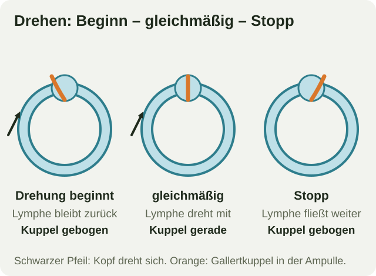
Bild antippen – dann wird es groß.
- Drehschwindel: Nach langem Drehen hast du dich »angepasst«. Beim Stoppen fließt die Lymphe weiter und meldet eine Drehung in die Gegenrichtung – die Augen sehen aber Stillstand. Dieser Widerspruch ist Schwindel.
- Piloten: In Wolken oder nachts fehlt der Blick nach draußen. Eine lange, gleichmäßige Kurve fühlt sich nach einiger Zeit wie Geradeausflug an. Wer dem Gefühl folgt, gerät in eine Spirale. Die Regel lautet: den Instrumenten vertrauen, nicht dem Körper.
- Seekrankheit: Im Schiffsinneren sieht alles ruhig aus, das Gleichgewichtsorgan meldet aber Schaukeln. Hilfe: an Deck gehen und den Horizont anschauen.
- Sport: Eiskunstläufer und Tänzer drehen den Kopf ruckartig und halten einen Punkt mit den Augen fest (»Spotting«). Das Training dämpft außerdem die Reaktion des Gehirns auf die Bogengang-Signale.
Was melden die Bogengänge?
Erst überlegen – dann Lösung anzeigen
Drehbeschleunigung – Beginn und Ende einer Drehung.
Warum wird man seekrank?
Erst überlegen – dann Lösung anzeigen
Augen und Gleichgewichtsorgan melden Widersprüchliches (Deck scheint ruhig, Körper schwankt).
Zum Nachschlagen
Fachbegriffe
| Begriff | Bedeutung |
|---|---|
| Schall | mechanische Welle in Gas, Flüssigkeit oder festem Stoff; in Luft eine Druck- und Dichtewelle |
| Longitudinalwelle (Längswelle) | Welle, bei der die Teilchen in Ausbreitungsrichtung hin und her schwingen – so breitet sich Schall in Luft aus |
| Schalldruck p | Schwankung des Luftdrucks um den normalen Luftdruck, Einheit Pascal (Pa) |
| Frequenz f | Schwingungen pro Sekunde, Einheit Hertz (Hz); bestimmt die Tonhöhe |
| Amplitude | größte Auslenkung bzw. größte Druckschwankung; größere Amplitude = stärkerer Schall |
| Wellenlänge λ | Abstand zweier gleicher Stellen der Welle, Einheit m; es gilt v = λ · f |
| Schallgeschwindigkeit v | in Luft etwa 340 m/s (bei 15 °C; 343 m/s bei 20 °C), in Wasser etwa 1480 m/s, in Stahl rund 5000 m/s |
| Echo | zurückgeworfener Schall; die gemessene Zeit gilt für Hin- und Rückweg |
| Schallintensität I | Schallenergie pro Fläche und Zeit, Einheit W/m² |
| Schalldruckpegel L | physikalisches Maß in Dezibel (dB); +10 dB = zehnfache Intensität, etwa 3,2-facher Schalldruck |
| Lautstärke | wie laut wir einen Schall empfinden; hängt vom Pegel UND von der Frequenz ab (Buch: Einheit phon) |
| Hörbereich | etwa 20 Hz bis 20 000 Hz bei jungen Menschen; nimmt mit dem Alter nach oben hin ab |
| Infraschall / Ultraschall | Schall unter 20 Hz bzw. über 20 000 Hz – für Menschen nicht hörbar |
| Resonanzkörper | Hohlkörper oder Platte, die mitschwingt und den Schall verstärkt (Gitarre, Resonanzkasten der Stimmgabel) |
| Trommelfell | dünne Haut zwischen Außen- und Mittelohr; schwingt mit dem Schall |
| Gehörknöchelchen | Hammer, Amboss, Steigbügel im Mittelohr; übertragen die Schwingung und verstärken den Druck am ovalen Fenster etwa 22-fach |
| Ohrtrompete | Verbindung von Mittelohr und Rachen; gleicht den Luftdruck aus (Druck auf den Ohren beim Fliegen) |
| Schnecke | Teil des Innenohrs mit Lymphe und dem Corti-Organ |
| Haarzellen (Corti-Organ) | Sinneszellen, die Schwingungen in elektrische Signale umwandeln; wachsen beim Menschen nicht nach |
| Luftleitung / Knochenleitung | Schall erreicht die Schnecke über Gehörgang und Mittelohr – oder direkt über die Schädelknochen |
| Knalltrauma | Schädigung des Innenohrs durch einen kurzen, extrem lauten Knall (z. B. Schuss) |
| Tinnitus | Ohrgeräusch (Pfeifen, Rauschen) ohne äußere Schallquelle |
| Richtungshören | Orten einer Schallquelle aus Zeit- und Pegelunterschieden zwischen beiden Ohren |
| Vorhofsäckchen (Lagesinn) | Sinnesfelder mit Kalkkristallen; melden Neigung (Schwerkraft) und Beschleunigung geradeaus |
| Bogengänge (Drehsinn) | drei flüssigkeitsgefüllte Ringe in drei Ebenen; melden Drehbeschleunigung |
| Lymphe | Flüssigkeit im Innenohr; ihre Trägheit macht den Drehsinn möglich |
Zum Schluss
Kurz & knapp
- Schall ist eine Druckwelle: Die Teilchen schwingen nur hin und her, weiter wandert die Verdichtung. Ohne Teilchen (Vakuum) gibt es keinen Schall.
- In Luft ist Schall rund 340 m/s schnell (wärmer = schneller). Es gilt s = v · t, beim Echo zählt der Weg hin und zurück.
- Die Frequenz bestimmt die Tonhöhe, die Amplitude die Stärke. +10 dB heißt zehnfache Intensität – aber nur etwa 3,2-facher Schalldruck.
- Im Ohr verstärken die Gehörknöchelchen den Druck; die Haarzellen in der Schnecke machen daraus elektrische Signale. Kaputte Haarzellen wachsen nicht nach.
- Die Vorhofsäckchen melden Lage und Beschleunigung geradeaus, die Bogengänge Drehbeschleunigung – deshalb täuschen uns lange gleichmäßige Drehungen.
Theorie-KarteAlles auf einen BlickBuch S. 60–67, 109–112
Bild antippen – dann wird es groß.
Quelle → Luft → Ohr → Haarzellen → Gehirn → Orientierung: Das ist der Weg dieser Einheit.
Rechnen: s = v · t (Echo: durch 2) und λ = v / f, mit v ≈ 340 m/s in Luft.
Merken: +10 dB = Intensität × 10, Haarzellen wachsen nicht nach, Bogengänge melden Drehung, Vorhofsäckchen Lage.
| s = v · t | Weg, Geschwindigkeit, Zeit | m, m/s, s |
| λ = v / f | Wellenlänge | m |
| +10 dB | Intensität × 10 |
Tippe ehrlich an – bei »noch nicht« den passenden Teil noch einmal lesen.
Schall als Druckwelle erklären und die Größen Frequenz, Amplitude, Wellenlänge, Schallgeschwindigkeit und Schalldruckpegel richtig zuordnen
mit s = v · t und v = λ · f Entfernungen, Echos und Laufzeiten berechnen
einen Schallpegel vergleichend messen und Dezibel-Werte richtig deuten – auch für Gehörschutz beim Schießen, im Konzert und mit Kopfhörern
erklären, wie das Ohr aus Druckschwankungen Nervensignale macht und wie Richtungshören und Gleichgewichtssinn funktionieren
Optional
Für Schnelle und Neugierige
- Zusatzaufgabe 10 rechnet mit Echolot und Fledermaus. Filmtipp aus dem Schulbuch (S. 60): trauner.at/nawi_v52.aspx.
- Ökologie: Wale und Delfine verständigen sich über weite Strecken mit Schall. Schiffsmotoren, Sonar und Bauarbeiten im Meer übertönen ihre Rufe – ein wachsendes Problem für Tiere, die sich im Dunkeln nur über das Hören orientieren.
- Medizin: Ultraschall erwärmt Gewebe nur wenig und strahlt nicht wie Röntgen. Darum ist er für Untersuchungen in der Schwangerschaft das Mittel der Wahl.
- Fährt ein Einsatzfahrzeug mit Folgetonhorn vorbei, klingt der Ton beim Näherkommen höher und beim Wegfahren tiefer. Die Wellen werden vorne zusammengeschoben und hinten auseinandergezogen.
- Das Phänomen heißt Dopplereffekt (Buch S. 65). In dieser Einheit ist es kein Teststoff.
- Ein Gespräch hat eine Schallintensität von nur etwa einem Millionstel Watt pro Quadratmeter. Um mit der Schallenergie eines Gesprächs eine Tasse Tee zu erwärmen, müsste man über hundert Jahre ununterbrochen reden.
- Trotzdem reicht dieser winzige Druck, um deine Haarzellen zu reizen – das Ohr ist eines der empfindlichsten Messgeräte, die es gibt.
Zusatzaufgaben und Zusatztexte zählen nicht zum Pflichtfortschritt und sind keine Hausübung.
Weiter geht's
Jetzt bist du dran
Theorie zum Nachlesen im Schulbuch Naturwissenschaften HAK 4 (Trauner) S. 60–67 und 109–112. Alle Grafiken selbst gezeichnet. Klassenübersicht 4AB
Stand 14.11.2026 · v1